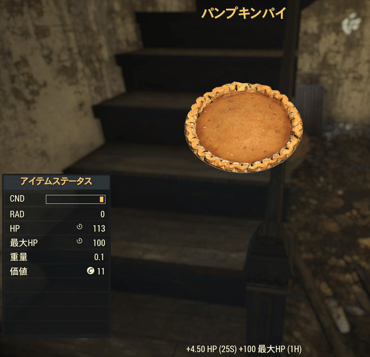
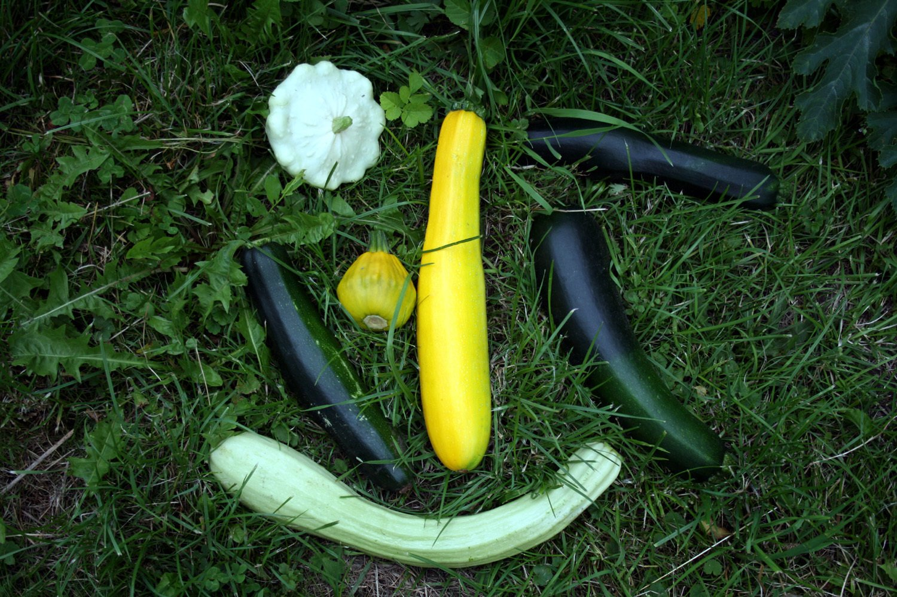

カボチャ
カボチャは、『Fallout 76』に登場する消耗品です。
特徴
カボチャは大きなオレンジ色の果実で、調理の目的では野菜として扱われます。
生のまま食べて中程度の空腹を満たすことができますが、中程度の放射能ダメージを受け、病気に感染する可能性もあります。
また、調理してさらなる恩恵を得ることも可能です。
カボチャは伝統的に、秋やハロウィーンの時期の装飾としても使用されます。
基本情報
関連パーク・変異
変異:
草食動物: 効果が2倍になります。
肉食動物: 効果がなくなります。
パーク:
Green Thumb
Good with Salt
Iron Stomach
Lead Belly
Slow Metabolizer
Thru-hiker (重量減少)
クラフト情報

以下のアイテムの材料になります：
ジャック・オー・ランタン
パンプキンパイ
カボチャの棚
パンプキンスープ
関連クエスト
Trick or Treat?
場所
パンプキンハウス周辺の地域に多く自生しています。 ハウス自体の周り（遊び場や周囲の区画を含む）で少なくとも27個見つけることができ、道路を挟んだ向かいの「ハロウィーンの恐怖の農場」ではさらに多く見つかります。
アーロンホルト農家の南東、4台目の赤いトラクター／ジャンクの山／蜂の群れの東側に11個あります。
モーガンタウン高校の廊下周辺で最大10個見つかります。
ホーンライト・エステートの南、ランダムエンカウンターの発生場所にある、ルート93沿いの2軒のマークされていない家に10個あります。3個はカボチャを販売している小さなテーブルの上に、6個は近くの畑に、もう1個は家のポーチにあります。
モーガンタウン空港の北西に約7本の蔓があります。
ビリングス農家のポーチと家の中に5個あります。
タイラー郡フェアグラウンド駐車場の近くにある、ハロウィーンをテーマにした小屋に5個あります。
「ハロウィーン・ホラー・ハムレット」のハロウィーン装飾の中に5個あります。
ウィクソン農家の家と納屋の間に数個あります。
ワイルド・ウルフ農家の温室の外に2個あります。
グローブス家の小屋の蔓に2個なっています。
アンカー農場の東側にある庭に2個あります。
北の山展望台にあるピックアップトラックの荷台に1個あります。
備考
Story Timeのミス・ナニーは、ランダムエンカウンターの一部としてVault 76の居住者に語る「シンデレラ」の物語の中でカボチャに言及します。 「彼女が杖をカボチャに向かって振ると、それは銀の馬車に変わり、ネズミの家族は馬車を引く馬のチームに変わりました。」（ミス・ナニーの台詞）
舞台裏

削除されたVault 94の温室ターミナルのエントリーでは、カボチャは実在の種名である Cucurbita pepo（ペポカボチャ）として言及されています。
カボチャ、アパラチアの秋を感じさせる素敵なアイテムですね！
パンプキンハウスの象徴: ジャック・ブーマーのデイリークエスト Trick or Treat? で大量に集めることになるので、多くの居住者にとって馴染み深い植物だと思います。
実用的な料理材料: パンプキンパイは最大HP上昇に役立ちますし、スープも手軽に作れるので、冒険の合間の栄養補給にぴったりです。
シンデレラのトリビア: ミス・ナニーが語る童話の中にも登場するというディテールが、殺伐とした世界に少しの遊び心を添えていて面白いですね。
パンプキンパイを使いたい方は作成するのでは無く、ロケーションから拾ったほうが楽です。
This article uses material from the Fallout wiki at Fandom and is licensed under the Creative Commons Attribution-Share Alike License.
コミュニティ維持のため、寄付を受け付けております。
> COMMENTS